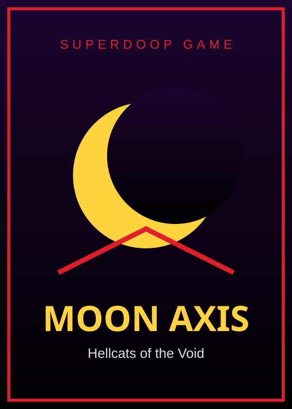

MOON AXIS

Game
Moon Axis
Hellcats of the Void
A first-person vector shooter in the 1983 Star Wars arcade mold: glowing wireframe ships, a cockpit rail, seven sorties from the dark side into the Staff. Play in the browser or add to a phone home screen.
▶ PLAY🎮 Controls
- Desktop
- Mouse aims (yoke), WASD trims, click / Space fire, Shift boost, B barrel-roll, P pause / settings.
- Phone (landscape)
- Left stick aims; FIRE / BOOST / ROLL buttons. FULL (top right) hides browser chrome.